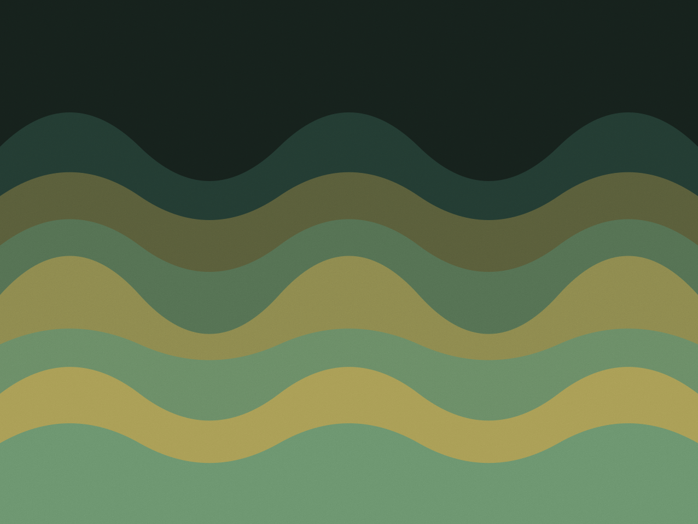
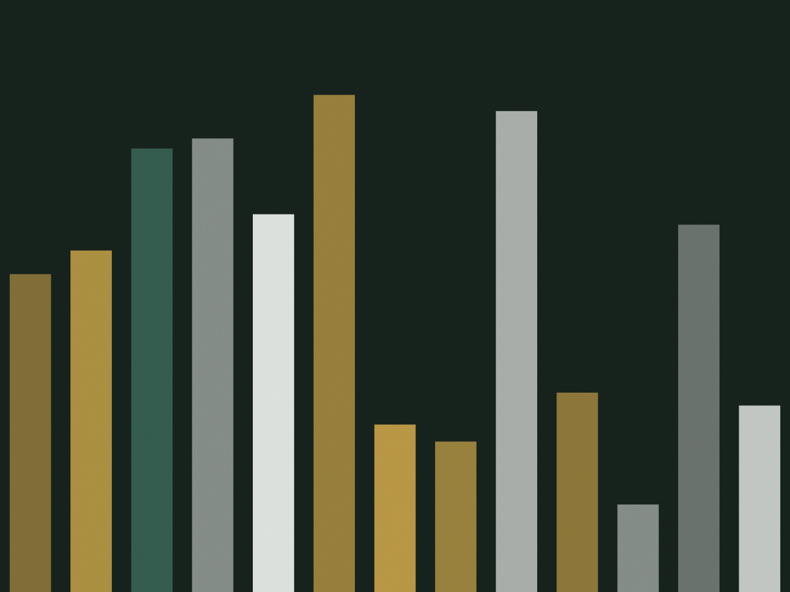

Vila Mariana, São Paulo · desde 2021
O erro de hoje volta em sete dias
Toda questão que você erra entra num banco com o motivo do erro e a data do próximo contato. São quatro contatos com o mesmo conceito antes da prova — 1, 7, 30 e 90 dias. R$ 240 por mês, sem contrato de um ano.

Contatos com o mesmo conceito
- 1dia
- 7dias
- 30dias
- 90dias
Se você acertar de primeira, a questão não entra. Método para o que ficou faltando, não para o que já está resolvido.
Quatro passos, e o segundo é o que quase todo mundo pula
Estudar mais horas não resolve erro repetido. O método começa em descobrir o que exatamente faltou em cada questão — conta, conceito, leitura do enunciado ou tempo.
-
Diagnóstico de 30 questões
Uma prova curta por matéria, corrigida na hora, que gera o mapa de erros por tópico. Serve para montar a fila de estudo da primeira quinzena, não para dar nota.
-
Classificar o erro, não só marcar o X
Cada erro recebe um tipo: conceito, conta, leitura de enunciado, desatenção ou tempo. Cinco tipos, escolhidos numa lista de cinco opções. É o passo que separa “errei de novo” de “errei porque inverti a fórmula da diluição”.
-
Revisão em 1, 7, 30 e 90 dias
A questão volta no app na data marcada, sem você decidir nada. Errar de novo reinicia a contagem daquele conceito; acertar duas vezes seguidas tira a questão da fila.
-
Blocos de 25 minutos, três por dia
O app conta o bloco, não a hora. Três blocos por dia, seis dias por semana, com o conteúdo já escolhido pela fila de revisão — a decisão do que estudar não fica com você às 21h de uma terça.
Como é um registro no banco de erros
A ficha tem cinco campos. Ela é preenchida em menos de um minuto, no celular, com a questão ainda na frente.
Registro 0148 · Física · Cinemática
- O que a questão pedia
- Velocidade média em trajeto com dois trechos e parada intermediária.
- Tipo de erro
- Conceito — somei distância e dividi pelo tempo total sem descontar a parada.
- O que eu confundi
- Velocidade média com média das velocidades.
- Questão de apoio
- Lista 3, exercício 12, resolvido no plantão de quinta.
- Próximos contatos
- 12/03 · 18/03 · 10/04 · 09/06
O banco é individual e não vira ranking. Ninguém na sala vê os erros de ninguém, e o monitor só abre a ficha com o aluno do lado.
A semana de quem estuda aqui
A sala da Vila Mariana abre de segunda a sexta das 9h às 21h e sábado das 9h às 13h. Monitoria é presencial, com hora marcada no app, e está incluída no plano.
| Período | Seg | Ter | Qua | Qui | Sex | Sáb |
|---|---|---|---|---|---|---|
| 9h – 13h | Sala aberta | Sala aberta | Sala aberta | Sala aberta | Sala aberta | Sala aberta 9h – 13h |
| 14h – 18h | Monitoria matemática |
Sala aberta | Monitoria física |
Sala aberta | Monitoria redação |
|
| 18h – 21h | Sala aberta | Grupo de revisão |
Sala aberta | Grupo de revisão |
fechado |

- Bruna Sathler Monitoria de segunda à tarde. Trabalha com função afim e progressão, os dois tópicos que mais aparecem no banco de erros de quem vem do 1º ano.
- Igor Nakamura Quarta à tarde. Insiste em resolver a mesma questão por dois caminhos antes de fechar o registro no banco.
- Tainá Ribeiro Sexta à tarde. Corrige na frente do aluno e usa a mesma classificação de erro do banco: conceito, leitura, tempo.
R$ 240 por mês, com monitoria dentro
Não tem taxa de adesão nem fidelidade. O diagnóstico é cobrado uma vez, R$ 90, e é abatido da primeira mensalidade se você continuar.
Plano mensal
R$ 240
por mês · app, banco de erros e monitoria
- Banco de erros e fila de revisão no app
- Quatro monitorias de 50 minutos por mês
- Sala de estudo na Vila Mariana, horário livre
- Diagnóstico inicial30 questões por matériaR$ 90
- Plano semestralseis meses pagos de uma vezR$ 1.260
- Sala avulsaum dia, para quem não é alunoR$ 35
- Monitoria extraalém das quatro do mêsR$ 60
- Cancelamentoaviso de 30 dias, sem multaR$ 0
Rua Domingos de Morais, 1180 — Vila Mariana
A uma quadra do metrô Ana Rosa. O diagnóstico é presencial, dura 90 minutos e sai com o mapa de erros impresso. Se a sala estiver cheia no horário que você quer, a secretaria avisa em dois dias.
- Telefone
- (11) 5082-4170
- sala@notasestudo.com.br
- Aberto
- seg a sex, 9h às 21h · sáb, 9h às 13h